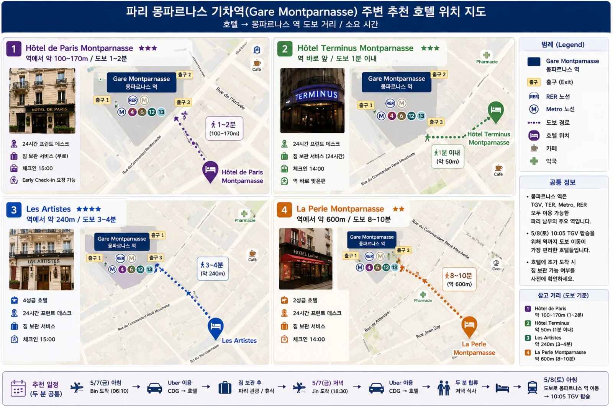

파리 1박, 생장 1박, 카미노 13박 — 모두 15박입니다.
조건은 두 가지입니다 — 2인 개인실과 자전거 2대를 안전하게 둘 곳.
아래에 예약 현황, 날짜별 후보, 연락 문구를 한데 모았습니다.
예약 현황
예약 순서 — 급한 곳부터
①지금 바로
Zubiri · Rabanal · Vega de Valcarce · Arzúa
작은 마을이라 방이 몇 개 없습니다
②이른 편
Navarrete · Castrojeriz · Sarria
사리아는 100 km 지점이라 순례자가 몰립니다
③보통
Estella · Belorado · Santiago
선택지가 어느 정도 있습니다
④여유
Sahagún숙소가 넉넉한 편
⑤가장 여유
León (2박)도시라 언제든 잡힙니다
2027년 요금은 아직 대부분 열리지 않았습니다
아래 가격은 2026년 기준 시작가이거나 최근 공개된 값입니다. 2027년 5월 판매가 열리면 달라집니다.
취소 조건도 요금제마다 다르고 확인되지 않은 곳이 많아, 무료 취소라고 적지 않았습니다.
예약할 때 각자 확인하세요. 2027년은 성년(Año Xacobeo)이라 방이 일찍 찹니다.
5/7 파리 · 몽파르나스
모두 Gare Montparnasse 도보권입니다.
Bin은 아침 일찍, Jin은 밤늦게 도착하므로 프런트 운영 시간과 짐 보관이 가격보다 중요합니다.

Gare Montparnasse 주변 후보 네 곳 — 눌러서 크게 볼 수 있습니다
1
Hôtel de Paris Montparnasse추천
Montparnasse역에서 약 100~170 m
24시간 프런트
도착일 짐 보관
얼리 체크인 요청 가능
가장 추천
2
Hôtel Terminus Montparnasse
Montparnasse역에서 역 바로 앞
24시간 운영
24시간 짐 보관
체크인 14:00
매우 편리
3
Les Artistes
Montparnasse역에서 약 240 m
4성급
평점이 좋은 편
역과 매우 가까움
조금 더 좋은 숙소
4
La Perle Montparnasse
Montparnasse역에서 약 600 m
2성급
실속형
비용 절약형
예약할 때 확인할 것
BIN 5/7 오전 8~9시경 도착 — 얼리 체크인 가능 여부,
안 되면 무료 짐 보관이 되는지
JIN 5/7 20~21시경 체크인 — 늦은 체크인이 가능한지
(프런트 24시간 운영이면 안심)
두 사람이 따로 도착하므로, 먼저 온 사람 이름으로 예약해 두고
늦게 오는 사람의 이름도 함께 등록해 두세요
역까지 실제 도보 경로 확인 — 몽파르나스역은 크기 때문에
출입구에 따라 5분이 10분이 됩니다. TGV 승강장은 주로 대합실 위층입니다
성급·거리·정책은 바뀔 수 있으니 예약 화면에서 다시 확인하세요.
2027년 5월은 아직 요금이 뜨지 않는 곳도 있습니다.
5/8 생장피에드포르
생장 구시가는 한 덩어리라 어느 숙소에 묵어도 순례자 사무소까지 걸어서 몇 분입니다.
그래서 위치보다 2인 개인실과 자전거 2대를 안전하게 둘 곳이 훨씬 중요합니다.
순례자 사무소
39 rue de la Citadelle Maison Laborde · 64220 Saint-Jean-Pied-de-Port
전화+33 5 59 37 05 09
5/8 토07:45–12:00 · 14:00–20:15
받는 것크레덴시알 · 생장 출발 도장
물어볼 것피레네 날씨와 노선 상태
15:26 도착이면 사무소가 열려 있습니다.
자전거 점검을 마친 뒤 바로 가세요 — 20:15에 닫습니다.
절대조건으로 잡으면 세 곳이 남습니다.
“2인 개인실 + 자전거 2대 안전 보관”이 웹에서 확실히 확인되는 곳은
Gîte Compostella · Gîte Izaxulo · Hôtel Camou 입니다.
나머지는 개인실은 되지만 자전거 보관을 직접 물어봐야 합니다.
숙소
2인 개인실
자전거 보관
비고
1
Central Hôtel1 Place Charles de Gaulle · 64220
Double / Twin
문의 필요
일반 호텔 · 전용 욕실
2
Chambres à louer Simonenia12 Rue de la Citadelle · 64220
Private room
문의 필요
구시가 중심
3
Plan B — Chambres & Studios28 Rue de la Citadelle · 64220
Studio 2인
문의 필요
2인 Standard Studio
4
Chambres Zazpiak235 Chemin de Portaleburu · 64220
Double / Twin
문의 필요
전용 욕실 · 출발 방향
5
Gîte BIDEAN11 Rue d'Espagne · 64220
Private room
문의 필요
순례자 숙소
6
Gîte Compostella6 Route d'Arneguy · 64220
2인실
확인됨
Secure bicycle garage
7
Gîte de la Porte Saint Jacques51 Rue de la Citadelle · 64220
Double private
문의 필요
순례길 출발점 바로 옆
8
Gîte Izaxulo2 Avenue Renaud · 64220
Twin / Double ×3
확인됨
Bicycle garage
9
Hostel 20 Ramuntcho1 Rue de France · 64220
Double / Twin
문의 필요
렌털 자전거 배송지로 견적됨
10
Hôtel CamouRoute de Lasse, Uhart-Cize · 64220
Hotel room
확인됨
자전거 순례자 시설 좋음
11
Hôtel des Pyrénées19 Place Charles de Gaulle · 64220
Hotel room
문의 필요
4성급
예약할 때 확인할 것
자전거 2대를 밤새 실내에 둘 수 있는지 — 이것이 첫 번째 조건입니다.
구시가 건물은 계단이 좁아 객실까지 들고 올라가기 어렵습니다
렌털 자전거를 미리 받아 보관해 줄 수 있는지 — 5/8 오후 배송 예정임을 함께 알려 주세요.
현재 견적은 Hostel 20 Ramuntcho(9번) 배송으로 잡혀 있습니다
5/9 아침 이른 출발이 가능한지 — 열쇠 반납 방법을 미리 정해 두세요
아침 식사 시각 — 대개 07:30부터라 그보다 일찍 나가려면 전날 밤 간식을 챙겨야 합니다
10번 Hôtel Camou 는 Uhart-Cize 로 생장 바깥 마을입니다.
자전거 시설은 좋지만 사무소까지 거리가 있으니 이동 시간을 감안하세요
2027년은 성년(Año Xacobeo)이라 예약이 일찍 찹니다.
주소·객실 구성은 예약 화면에서 다시 확인하세요.
날짜별 숙박지
아래 목록은 GPX 경로 끝에서 1.5 km 안에 있는 실제 알베르게입니다 —
주소와 전화번호가 함께 들어 있습니다. 거리는 그날 도착 지점에서 잰 값입니다.
알베르게는 대부분 공동 침실이라, 2인 개인실을 원하면 아래 “확인한 곳”이나
Booking 검색을 함께 보세요. 전화번호를 누르면 바로 걸립니다. 온라인 예약을 안 받는 곳이 많아
전화나 왓츠앱이 가장 확실합니다.
5/9DAY 1수비리① 지금 바로
1Albergue Zalldikoc/ Puenta de la Rabia 1, Zubiri · Tel +34 609 736 420103 m
2Albergue Segunda EtapaAv. de Roncesvalles 22, Zubiri · Tel +34 697 186 560184 m
3Albergue municipal de peregrinos de ZubiriAv. De Zubiri, Zubiri · Tel +34 628 324 186240 m
2인 개인실로 확인한 곳El Palo de Avellano2인 개인실 · €62 · 보관 확인
마을이 아주 작아 숙소 수가 적습니다. 대안인 Albergue La Senda 도 함께 물어보세요.
주소 확인 필요
Vega de Valcarce5/18
Albergue El Paso · Casa Polín
숙소 홈페이지 · Booking 메시지
Las Herrerías 쪽 두 곳이 대안입니다. 세 곳에 같은 문의를 한꺼번에 보내세요.
주소 확인 필요
Arzúa5/20
Hotel La Puerta de Arzúa
숙소 홈페이지 · Booking 메시지
산티아고 직전 마지막 밤이라 경쟁이 심합니다.
주소 확인 필요
보낸 것 · 아직 남은 것
숙소
날짜
번호
보낸 시각
상태
메모
Albergue Suseia수비리 · Zubiri
5/9May 9
+34 679 66 76 03
22:39
✓✓ 전달됨
달력에 2027이 없다는 문장까지 넣어 보냄
Casa Indie라바날 · Rabanal del Camino
5/17May 17
+34 625 47 03 92
22:47
✓ 발송됨
확인된 메일 casaindie@hotmail.com 도 함께 보내면 확실합니다
La Puerta de Arzúa아르수아 · Arzúa
5/20May 20
+34 680 95 36 94
22:49
✓✓ 전달됨Business
업무용 계정이라 답장이 가장 빠를 가능성이 높습니다
Casa Polín라스 에레리아스 · Las Herrerías
5/18May 18
확인된 번호 없음
—
아직
홈페이지 문의 양식 또는 Booking 메시지로 보내야 합니다
체크 표시가 뜻하는 것✓ 발송됨 서버까지만 갔습니다 — 상대 폰이 꺼져 있거나 데이터가 끊긴 상태.
켜지면 자동으로 전달됩니다. ✓✓ 전달됨 상대 휴대폰까지 도착했습니다.
파란색이 되면 읽은 것입니다.
답장은 언제 오나
스페인은 한국보다 7시간 느립니다.
한국 시간 오후 4시 ~ 밤 11시가 스페인 영업시간이라 그때 답이 옵니다.
이런 답이 오면 바로 잡으세요Sí, podemos reservar. Envíenos sus datos.
(네, 예약 가능합니다. 정보를 보내 주세요) —
이름·인원·날짜·연락처를 바로 보내고 보증금을 내면 확정됩니다.
답이 없으면
사나흘 기다렸다가 한 번 더 보내세요. 순례철 준비로 바쁜 시기라 놓치는 경우가 많습니다.
두 번째에도 없으면 전화나 Booking 메시지로 바꿔 보세요.
보낼 문구 — 네 곳 각각
묻는 것은 다섯 가지입니다 — ① 2027년 예약이 언제 열리는지,
② 2인 개인실 + 전용욕실, ③ 자전거 2대 안전 보관,
④ 총 가격, ⑤ 취소 조건.
스페인 숙소에는 스페인어가 답장이 빠릅니다.
맨 아래 연락처와 이름을 꼭 채워 넣으세요 — 이름 없는 문의에는 답이 잘 오지 않습니다.
Zubiri5/9 · Albergue Suseia
2인 개인실 단 1실 — 가장 급합니다
Asunto: Reserva para 2 personas - 9 de mayo de 2027
Hola,
Somos dos peregrinos y estamos planeando hacer el Camino de Santiago en
bicicleta en mayo de 2027.
Nos gustaria alojarnos en Albergue Suseia la noche del 9 de mayo de 2027,
para 2 personas y 1 noche. Llegaremos en bicicleta por la tarde.
Estamos interesados en una habitacion privada para 2 personas con bano privado.
Podrian informarnos, por favor, sobre lo siguiente?
1. Cuando se abriran las reservas para mayo de 2027?
2. Podremos reservar una habitacion privada para 2 personas con bano privado
para el 9 de mayo?
3. Viajaremos con 2 bicicletas. Disponen de un lugar seguro y cerrado donde
podamos guardar ambas bicicletas durante la noche?
4. Cual seria el precio total para 2 personas?
5. Cual es la politica de cancelacion?
Podemos pagar la senal cuando ustedes digan.
Muchas gracias por su ayuda.
Un saludo y Buen Camino!
Jin-Ook Kim
jinookpaul@naver.com
+82 10-____-____ (WhatsApp)
Rabanal del Camino5/17 · Hotel Rural Casa Indie
마을이 작아 숙소가 몇 곳 없습니다
Asunto: Reserva para 2 personas - 17 de mayo de 2027
Hola,
Somos dos peregrinos y estamos planeando hacer el Camino de Santiago en
bicicleta en mayo de 2027.
Nos gustaria alojarnos en Hotel Rural Casa Indie la noche del 17 de mayo de 2027,
para 2 personas y 1 noche. Llegaremos en bicicleta por la tarde.
Estamos interesados en una habitacion privada para 2 personas con bano privado.
Podrian informarnos, por favor, sobre lo siguiente?
1. Cuando se abriran las reservas para mayo de 2027?
2. Podremos reservar una habitacion privada para 2 personas con bano privado
para el 17 de mayo?
3. Viajaremos con 2 bicicletas. Disponen de un lugar seguro y cerrado donde
podamos guardar ambas bicicletas durante la noche?
4. Cual seria el precio total para 2 personas?
5. Cual es la politica de cancelacion?
Podemos pagar la senal cuando ustedes digan.
Muchas gracias por su ayuda.
Un saludo y Buen Camino!
Jin-Ook Kim
jinookpaul@naver.com
+82 10-____-____ (WhatsApp)
Las Herrerías5/18 · Casa Polín
2 single beds + 전용욕실 객실이 있습니다
Asunto: Reserva para 2 personas - 18 de mayo de 2027
Hola,
Somos dos peregrinos y estamos planeando hacer el Camino de Santiago en
bicicleta en mayo de 2027.
Nos gustaria alojarnos en Casa Polín la noche del 18 de mayo de 2027,
para 2 personas y 1 noche. Llegaremos en bicicleta por la tarde.
Estamos interesados en una habitacion privada para 2 personas con bano privado. Si es posible, preferimos una habitacion con 2 camas individuales.
Podrian informarnos, por favor, sobre lo siguiente?
1. Cuando se abriran las reservas para mayo de 2027?
2. Podremos reservar una habitacion privada para 2 personas con bano privado
para el 18 de mayo?
3. Viajaremos con 2 bicicletas. Disponen de un lugar seguro y cerrado donde
podamos guardar ambas bicicletas durante la noche?
4. Cual seria el precio total para 2 personas?
5. Cual es la politica de cancelacion?
Podemos pagar la senal cuando ustedes digan.
Muchas gracias por su ayuda.
Un saludo y Buen Camino!
Jin-Ook Kim
jinookpaul@naver.com
+82 10-____-____ (WhatsApp)
Arzúa5/20 · Hotel La Puerta de Arzúa
산티아고 직전 마지막 밤 — 경쟁이 심합니다
Asunto: Reserva para 2 personas - 20 de mayo de 2027
Hola,
Somos dos peregrinos y estamos planeando hacer el Camino de Santiago en
bicicleta en mayo de 2027.
Nos gustaria alojarnos en Hotel La Puerta de Arzúa la noche del 20 de mayo de 2027,
para 2 personas y 1 noche. Llegaremos en bicicleta por la tarde.
Estamos interesados en una habitacion privada para 2 personas con bano privado.
Podrian informarnos, por favor, sobre lo siguiente?
1. Cuando se abriran las reservas para mayo de 2027?
2. Podremos reservar una habitacion privada para 2 personas con bano privado
para el 20 de mayo?
3. Viajaremos con 2 bicicletas. Disponen de un lugar seguro y cerrado donde
podamos guardar ambas bicicletas durante la noche?
4. Cual seria el precio total para 2 personas?
5. Cual es la politica de cancelacion?
Podemos pagar la senal cuando ustedes digan.
Muchas gracias por su ayuda.
Un saludo y Buen Camino!
Jin-Ook Kim
jinookpaul@naver.com
+82 10-____-____ (WhatsApp)
세 마디가 핵심입니다.habitación privada (개인실 — 알베르게의 공동 침실이 아님) ·
lugar seguro y cerrado (잠기는 실내 — 단순히 세울 곳이 아님) ·
pagar la señal (보증금을 먼저 내겠다 — 지금 잡아 달라는 뜻).
마지막 한마디가 달력이 열리기 전에도 받아 주게 만드는 열쇠입니다.
왓츠앱으로 보내기 — Example) Suseia(영어 이름)
Suseia 는 홈페이지에 왓츠앱 번호를 직접 안내합니다.
번호를 저장할 필요 없이 아래 버튼을 누르면 문구가 채워진 채로 대화창이 열립니다.
컴퓨터에서는 web.whatsapp.com 에 휴대폰으로 QR 을 한 번 찍어 두면 됩니다.
왓츠앱은 짧게
메일처럼 길게 쓰면 잘 읽지 않습니다. 세 줄이면 충분하고,
답이 오면 그때 자세히 물으면 됩니다.
한국 번호로 보내도 상대는 그냥 국제 번호로 봅니다 — 통화료 없이 데이터만 씁니다.
왓츠앱용 짧은 문구
Hola! Somos dos peregrinos en bicicleta. Quisieramos una habitacion privada para 2 personas con bano privado la noche del 9 de mayo de 2027, y un lugar seguro y cerrado para guardar 2 bicicletas.
Su calendario todavia no muestra 2027. Podemos reservar ya? Cuando se abren las reservas? Podemos pagar la senal cuando digan.
Gracias! Buen Camino!